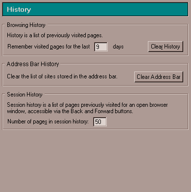
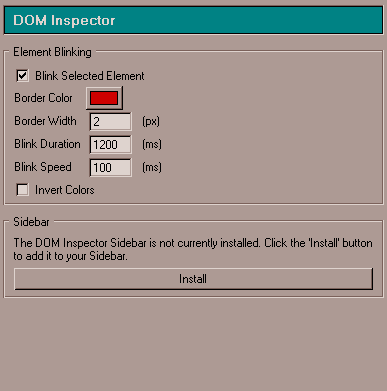

| | |
Table of Contents | Last | Next
Browsing - Configuring Paper Airplane
Configure how Paper Airplane works by going to the Tools pull-down menu and selecting Program Settings... Program Settings... is a modal dialog that opens in the center of the screen. On the left is an outline of various program areas that can be set, and on the right is the specific area that is being set:
Main Screen of Program Settings... Dialog
Either single-click or double-click one of the entries in the left-outline to have its properties open on the right-hand side of the dialog.
The program settings are broken into five major groups. Each of these corresponds to one of the top-level categories on the left-hand outline:
Press the OK button to confirm changes and the Cancel button to abandon changes made to the Program Settings... dialog.
Paper Airplane can handle many types of files. However, for some files, such as movies, Paper Airplane launches a "helper" application that can handle the file, or it saves the file for you to view later.
The settings in the Helper Applications preferences panel tell Paper Airplane which helper applications to use on your computer. You probably don't need to change them because they come preconfigured. Also, if Paper Airplane doesn't know which helper application to use, it allows you to find helper applications within the download dialog box.
The download dialog box has these options:
For experienced users to fine-tune the Helper Applications preferences:
To add a new helper application to the list:
To specify how Paper Airplane should handle downloaded files:
To remove an item from the list:
These are general program settings that apply across Paper Airplane. Open this top-level category if you want to change any of the following items:
The right-hand portion of the dialog will also update with the top-level General options:
Options for General Settings
To control account settings choose the Account Settings sub-category:
Options for General Settings - Account Settings
To control what file-types Paper Airplane is associated with choose the Use Paper Airplane For... sub-category:
Options for General Settings - Use Paper Airplane For...
To control Quick Launch choose the Quick Launch sub-category:
Options for General Settings - Quick Launch
The Paper Airplane browser can prompt you when a new version is available; to manage automatic software installation choose the Software Installation sub-category:
Options for General Settings - Software Installation
To configure how the mouse wheel behaves, select the Mouse Wheel sub-category:
Options for General Settings - Mouse Wheel
Changing Peer to Peer Settings
To change how your computer works on the Two Way Web peer-to-peer network first select the Tools pull-down menu and select Program Settings... Next, choose the Peer-to-Peer category in the Program Settings... dialog:
Peer-to-Peer Category Circled in Program Settings... Dialog
The Peer-to-Peer category will expand on the left and the following further sub-categories will be shown:
The right-hand portion of the dialog will also update with the top-level Peer-to-Peer options:
Options for Peer-to-Peer Settings
To start, stop, and configure the peer-to-peer services running on your machine choose the Services sub-category, which shows the following options on the right-hand side of the dialog window:
Options for Peer-to-Peer Settings - Services
Note that the actual services shown above will depend on the network architecture. [Update mockup after network architecture is finished]
You should only change settings in this sub-category if you are an expert user. Press the Start or Stop buttons or click the checkbox under the Started column to start or stop a service; a dialog will appear informing you that the network service is being stopped. This dialog will have a Cancel button to cancel the process. Double-click a service name to configure it. A modal dialog window will appear where you can configure that particular service; press the OK or Cancel buttons on this dialog when finished.
To control advanced settings, such as how your peer contacts the Rendezvous and Relay services on the JXTA network, choose the Advanced Settings sub-category:
Options for Peer-to-Peer Settings - Advanced Settings
[insert further help on configuring p2p services when network architecture is finished]
To change how the Paper Airplane editor works first select the Tools pull-down menu and select Program Settings... Next, choose the Editing category in the Program Settings... dialog:
Editing Category Circled in Program Settings... Dialog
The Editing category will expand on the left and the following further sub-categories will be shown:
The right-hand portion of the dialog will also update with the top-level Editing options:
Options for Editing Settings
To change spell checking options choose the Spell Checking sub-category, which shows the following options on the right-hand side of the dialog window:
Options for Editing Settings - Spell Checking
To change how the graphics tools in the editor work, select the Graphics sub-category:
Options for Editing Settings - Graphics
To change how the word processing tools in the editor work, select the Word Processing sub-category:
Options for Editing Settings - Word Processing
To change how the image processing tools in the editor work, select the Image Processing sub-category:
Options for Editing Settings - Image Processing
To change how the spreadsheet tools in the editor work, select the Spreadsheet sub-category:
Options for Editing Settings - Spreadsheet
To change how the AutoLinking tools in the editor work, select the AutoLinking sub-category:
Options for Editing Settings - AutoLinking
To change how Paper Airplane browses first select the Tools pull-down menu and select Program Settings... Next, choose the Browsing category in the Program Settings... dialog:
Browsing Category Circled in Program Settings... Dialog
The Browsing category will expand on the left and the following further sub-categories will be shown:
The right-hand portion of the dialog will also update with the top-level Browsing options:
Options for Browsing Settings
To configure different helper applications for different file-types, choose the Helper Applications sub-category:
Options for Browsing Settings - Helper Applications
To configure a default search engine and change how Paper Airplane shows its search options, choose the Internet Search sub-category:
Options for Browsing Settings - Internet Search
To change how the tabbed browsing feature works, choose the Tabbed Browsing sub-category:
Options for Browsing Settings - Tabbed Browsing
To change which external email and newsgroup program to use, choose the Email & Newsgroups sub-category:
Options for Browsing Settings - Email & Newsgroups
To configure the history function, such as setting for how many days history information is saved, choose the History sub-category:

Options for Browsing Settings - History
To configure cookies functionality, such as disabling them, choose the Cookies sub-category:
Options for Browsing Settings - Cookies
To manage how form information is stored, select the Forms sub-category:
Options for Browsing Settings - Forms
To manage and see passwords that have been saved for older World Wide Web Sites (not for Two Way Web Sites), choose the Passwords for Older Web Sites sub-category:
Options for Browsing Settings - Passwords for Older Web Sites
Changing Advanced Browsing Settings
To change advanced browsing settings, first select the Tools pull-down menu and select Program Settings... Next, choose the Advanced Browsing category in the Program Settings... dialog:
Advanced Browsing Category Circled in Program Settings... Dialog
The Advanced Browsing category will expand on the left and the following further sub-categories will be shown:
The right-hand portion of the dialog will also update with the top-level Advanced Browsing options:
Options for Advanced Browsing Settings
To configure the level of control scripts have over your browser choose the Scripts & Windows sub-category:
Options for Advanced Browsing Settings - Scripts & Windows
To configure a proxy server, select the Proxies sub-category:
Options for Advanced Browsing Settings - Proxies
To configure the hard-drive cache that is used for storing older, non-Two Way Web pages, select the Cache for Older Web sub-category:
Options for Advanced Browsing Settings - Cache for Older Web
To configure which HTTP protocol is used for accessing older, non-Two Way Web pages, choose the HTTP Networking sub-category:
Options for Advanced Browsing Settings - HTTP Networking
To configure how the Secure Sockets Layer protocol works select the SSL sub-category:
Options for Advanced Browsing Settings - SSL
To manage the security certificates on your machine select the Certificates sub-category:
Options for Advanced Browsing Settings - Certificates
To see advanced features for controlling how security certificates are validated choose the Certificate Validation sub-category:
Options for Advanced Browsing Settings - Certificate Validation
To configure the DOM Inspector utility, used for web development, select the DOM Inspector sub-category:

Options for Advanced Browsing Settings - DOM Inspector
Many organizations block access from the Internet to their networks. This prevents outside parties from gaining access to sensitive information. The protection is called a firewall.
If your organization has a firewall, the browser may need to go through a proxy server before connecting you to the Internet. The proxy server prevents outsiders from breaking into your organization's private network.
Before you start:
To set the browser to work with the proxy:
(If you select Manual proxy configuration) In the "No Proxy for" field, type the names of any domains that you can connect to directly, bypassing the proxy. For example, if you type "netscape.com", then the proxy is bypassed each time you view a web page from netscape.com.
Domain names are the part of a URL that contains the name of an organization, business, or school—such as netscape.com or washington.org. If you use local host names without the domain name, list them the same way. Use commas to separate multiple host names. The wildcard character [*] cannot be used.
Getting the Latest Software Automatically
Paper Airplane can notify you when updates for your software are available, and it can install the updates automatically.
You can specify how you want Paper Airplane to handle automatic software installation:
Quick Launch shortens the time it takes for Paper Airplane to start. When Paper Airplane uses Quick Launch, the Paper Airplane logo icon is present in the taskbar (near the time). Double-clicking on this icon will quickly start Paper Airplane (if it isn't started already).
When you installed Paper Airplane, you were given the option of enabling or disabling Quick Launch. If your computer is low in memory, or if you are have more then one profile, you can temporarily or permanently disable Quick Launch to conserve memory.
To temporarily disable Quick Launch until you start Paper Airplane again:
To enable or disable Quick Launch in Paper Airplane:
Tip: To easily disable Quick Launch, right-click on the Paper Airplane logo in the taskbar (near the time) and select "Disable Quick Launch" in the pop-up menu.